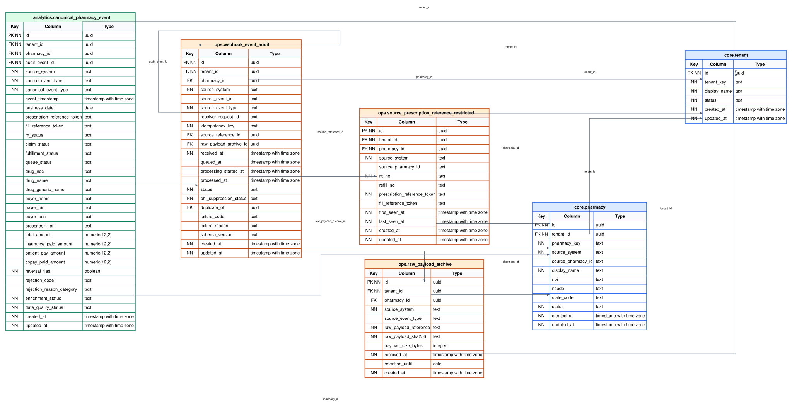
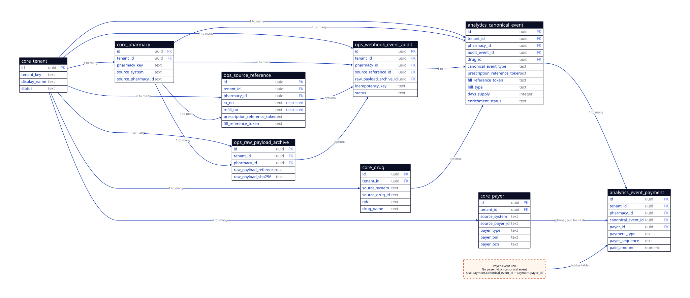

Canonical Event Table Dictionary
Field-level explanation, ER diagram, and access restrictions for the MVP database that stores PrimeRx webhook events in canonical format.
Current Scope
This schema stops at the current implementation goal: receive webhook events, store ingestion/processing records, save PHI-minimized pharmacy events, upsert safe drug/payer lookup rows, store payment components, and allow the API enrichment worker to update missing safe fields later.
This is not the full analytics warehouse design. It does not define forecasting tables, feature marts, dashboard-specific aggregates, or long-term patient analytics.
SaaS isolation decision: use one PostgreSQL schema per tenant and put all tenant-owned tables inside that schema. The checked-in SQL uses tenant_template as the local review schema. Table names below are intentionally unqualified because the active tenant schema is selected by authenticated tenant context.
Identifier convention: internal relational identifiers are bigint identity values. Source-system identifiers such as queue message IDs, pharmacy IDs, prescription numbers, and refill numbers remain text because they are external values, not database keys.
Source Of Truth
| Data category | Primary location | Rule |
|---|---|---|
| Exact original webhook/API payload values | Restricted raw archive, if retention is enabled | Not copied into canonical dashboard tables for convenience. |
| Drug attributes | drug | pharmacy_event stores only drug_id. Do not copy per-event drug snapshots into the canonical event row. |
| Insurance payer attributes | payer | Payment rows reference payer_id. Cash rows keep payer_id null. Do not copy per-event payer snapshots into the canonical event row. |
| Payer/payment amounts | event_payment | Primary, secondary, tertiary, patient pay, cash, and other payments are stored as rows. |
| Prescription/fill event facts | pharmacy_event | Stores PHI-minimized event facts, statuses, dates, quantities, cost facts, and tokens. |
Important: If fields like ndc, drug_name, payer_bin, or payer_pcn appear below, they belong only to normalized lookup tables such as drug and payer. They are not part of pharmacy_event. The restricted raw payload remains the source for the exact original vendor event snapshot.
Payer link path: pharmacy_event.id links to event_payment.pharmacy_event_id, then event_payment.payer_id links to payer.id. Cash rows stop at the payment table with payer_id = null.
ER Diagram
The PostgreSQL-derived ERD is the exact database view. It includes all tables, all columns, key markers, and foreign key connections from the deployed development schema.



Simplified Design View
The simplified diagram is easier for design review because it hides some column-level detail and emphasizes table responsibility.

Data Flow
- Webhook receiver receives the PrimeRx event and creates an
ingestion_eventrecord. - Receiver archives the raw payload only in the restricted
raw_payload_archivetable for short-term replay/debugging; normal product APIs do not read it. - Processor reads the queued event, validates it, de-duplicates it, and stores restricted source identifiers if present.
- Processor upserts safe drug and insurance payer lookup rows when the event contains usable NDC, product, BIN, PCN, or payer name values.
- Processor creates one PHI-minimized
pharmacy_eventrow and zero or more event payment rows. - API enrichment worker uses restricted
RxNo,RefillNo, and pharmacy reference to fetch missing details and update only safe lookup, canonical, and payment columns.
Access Summary
| Actor or service | Allowed access | Restriction |
|---|---|---|
| Webhook receiver Lambda | Insert into ingestion_event. Insert into raw_payload_archive only if raw archive is enabled. |
Should not write canonical event rows directly. Should not log raw payload content. |
| Webhook processor Lambda | Read/update ingestion rows, upsert restricted source reference rows, upsert safe drug/payer lookup rows, insert canonical event and payment rows. | May handle raw payload during processing, but must not copy direct patient identifiers into canonical tables or logs. |
| API enrichment worker | Read source_rx_reference. Update safe missing fields on drug, payer, pharmacy_event, and event_payment. Update audit/enrichment status. |
Should not expose real RxNo, RefillNo, or raw API responses outside the restricted service boundary. |
| Dashboard/API application | Read pharmacy_event, event_payment, and safe lookup labels from the authenticated user's tenant schema and authorized pharmacy scope. |
No direct access to restricted source-reference tables or raw payload archive. |
| Database administrator | Manage tenant schemas, indexes, migrations, database roles, backups, and emergency support. | Access should be limited to named admin users. Production access should be audited. |
Restrictions To Enforce
| Place | Restriction | Reason |
|---|---|---|
| API Gateway / receiver Lambda | Authenticate the webhook request before accepting it. | Prevents unauthenticated event injection. |
| SQS message | Keep messages encrypted. Do not add extra debug fields containing patient identifiers. | Queue messages may contain source payload data during MVP processing. |
| CloudWatch logs | Log metadata only: request ID, event type, tenant, pharmacy, status, and error code. Do not log raw payloads. | Logs are easy to over-share and should not become a PHI store. |
raw_payload_archive |
Restricted operational storage only. Raw JSON is never a dashboard/API data source and must not be logged. | Keeps the database from becoming a raw PHI payload store. |
source_rx_reference |
Backend services only. Contains real RxNo and RefillNo. |
These identifiers are required for PrimeRx API lookup, but should not appear in dashboards. |
pharmacy_event |
No patient name, DOB, address, phone, email, insurance member ID, prescription notes, or raw RxNo. |
This is the safe table used by product dashboards and basic reporting. |
event_payment |
Insurance payments may reference payer. Cash payments must use payment_type = 'cash' and payer_id = null. |
Cash is a payment method, not an insurance payer. |
| Database access | Use separate roles for receiver, processor, API enrichment, dashboard app, and admin. The app must select the tenant schema from authenticated tenant context and then apply pharmacy/role filtering. | Limits blast radius and prevents dashboard users from reaching another tenant schema or restricted source identifiers. |
tenant
Stores the customer or pharmacy group represented by the active tenant schema. Every tenant-owned row should still carry tenant_id as defense-in-depth and for audit/reconciliation.
| Field | Meaning | Access / restriction |
|---|---|---|
id | Internal unique tenant ID. | Safe internal identifier. Required for joins and tenant filtering. |
tenant_key | Stable tenant code used by configuration and integrations. | Safe, but should not be user-editable after setup. |
display_name | Human-readable tenant name. | Visible to internal admins and authorized application users. |
status | Whether the tenant is active or inactive. | Used to stop ingestion or app access for inactive tenants. |
created_at | When the tenant record was created. | Operational metadata. |
updated_at | When the tenant record was last updated. | Operational metadata. |
pharmacy
Stores pharmacy/store locations for a tenant. This lets webhook events be stored and queried at store level.
| Field | Meaning | Access / restriction |
|---|---|---|
id | Internal unique pharmacy ID. | Safe internal identifier. |
tenant_id | Tenant that owns this pharmacy. | Required for tenant isolation. |
pharmacy_key | Stable internal store key. | Safe. Used by configuration and application code. |
source_system | Source system name, for example primerx. | Safe lineage field. |
source_pharmacy_id | PrimeRx or vendor store identifier, if available. | Restricted to backend and admin use if vendor treats it as sensitive. |
display_name | Human-readable pharmacy/store name. | Visible to authorized app users for that tenant. |
npi | Pharmacy NPI, if available. | Operational/store identifier. Do not expose outside authorized tenant context. |
ncpdp | Pharmacy NCPDP identifier, if available. | Operational/store identifier. Do not expose outside authorized tenant context. |
state_code | Two-letter state code for the store. | Safe for store-level reporting. |
status | Whether the store is active or inactive. | Used to control ingestion and app visibility. |
created_at | When the pharmacy record was created. | Operational metadata. |
updated_at | When the pharmacy record was last updated. | Operational metadata. |
drug
Stores normalized drug lookup rows only. These fields are not copied into pharmacy_event; canonical events link to this table through drug_id when drug-level reporting or matching is needed.
| Field | Meaning | Access / restriction |
|---|---|---|
id | Internal unique drug row ID. | Safe internal identifier. |
tenant_id | Tenant where this drug row was observed. | Required for tenant isolation and tenant-specific source mappings. |
source_system | Source system name, for example primerx. | Safe lineage field. |
source_drug_id | PrimeRx-specific product identifier, such as SpecificProductID, when provided. | Safe product identifier for backend joins and enrichment. |
ndc | National Drug Code from webhook/API. | Safe drug identifier. Prefer this for matching when present. |
drug_name | Drug product display name from the source. | Safe descriptor for dashboard filters and labels. |
generic_name | Generic drug name if provided by API enrichment. | Safe descriptor. |
brand_name | Brand name if provided by API enrichment. | Safe descriptor. |
is_brand | Whether the source indicates the product is branded. | Safe reporting flag. |
strength | Drug strength, such as 200MG. | Safe descriptor. |
strength_unit | Strength unit of measure when separately provided. | Safe descriptor. |
form | Drug dosage form, such as tablet, capsule, liquid, or cream. | Safe descriptor. |
manufacturer_name | Manufacturer name from webhook/API. | Safe descriptor. |
drug_class | Source drug class value when provided. | Safe descriptor, but should be normalized later if used for analytics. |
unit_of_measure | Drug unit of measure from API enrichment. | Safe descriptor. |
quantity_per_pack | Quantity per package when the API provides it. | Safe product attribute. |
first_seen_at | First time this drug identity was observed. | Operational metadata. |
last_seen_at | Most recent time this drug identity was observed. | Operational metadata. |
created_at | When this row was created. | Operational metadata. |
updated_at | When this row was last updated. | Operational metadata. |
payer
Stores normalized insurance payer rows. Payers are linked to canonical events only through event_payment. Cash payments do not create payer rows; cash is represented in the payment table with payment_type = 'cash' and payer_id = null.
| Field | Meaning | Access / restriction |
|---|---|---|
id | Internal unique payer row ID. | Safe internal identifier. |
tenant_id | Tenant where this payer was observed. | Required for tenant isolation and tenant-specific source mappings. |
source_system | Source system name, for example primerx. | Safe lineage field. |
source_payer_id | PrimeRx insurance code or another source payer identifier, if available. | Safe operational identifier. Do not use patient insurance member ID here. |
payer_type | Payer classification: insurance, discount card, government, other, or unknown. | Safe grouping value. Cash is intentionally not included as a payer type. |
payer_name | Payer, plan, or insurance name from webhook/API. | Visible only inside authorized tenant context. |
payer_bin | BIN value used for payer routing when available. | Use for operations/analytics. Do not expose outside authorized tenant context. |
payer_pcn | PCN value used for payer routing when available. | Use for operations/analytics. Do not expose outside authorized tenant context. |
first_seen_at | First time this payer identity was observed. | Operational metadata. |
last_seen_at | Most recent time this payer identity was observed. | Operational metadata. |
created_at | When this row was created. | Operational metadata. |
updated_at | When this row was last updated. | Operational metadata. |
raw_payload_archive
Stores the restricted raw webhook payload and its metadata for short-term replay/debugging. MVP retention defaults to 30 days; legal/security must approve the retention and access model before production PHI is processed.
| Field | Meaning | Access / restriction |
|---|---|---|
id | Internal unique archive ID. | Restricted operational identifier. Internal IDs are bigint identity values. |
message_id | External queue message identifier used for idempotent raw archive writes. | Stored as text because source-system identifiers are not internal database IDs. |
tenant_id | Tenant associated with the payload after tenant resolution. | Nullable at initial receipt when the source payload has not yet been resolved; it must not be used to bypass tenant isolation. |
pharmacy_id | Pharmacy associated with the payload, if known at receipt time. | Nullable because some events may need parsing before store is known. |
source_pharmacy_id | Vendor pharmacy identifier from the source payload, for example PHARM-002. | Text identifier used to resolve the internal pharmacy_id. |
source_system | Source system name, for example primerx. | Safe lineage field. |
source_event_type | Vendor event type from the payload, such as RxBilled. | Safe operational metadata. |
raw_payload | Original source payload retained as JSON for short-term replay/debugging. | Highly restricted. Never expose through dashboards, normal APIs, logs, or analytics access paths. |
raw_payload_sha256 | Hash of the raw payload used for integrity checks and duplicate fallback. | Operational metadata. Does not replace idempotency key. |
payload_size_bytes | Size of the raw payload. | Operational metadata for troubleshooting. |
received_at | When the payload was received. | Operational metadata. |
retention_until | Date after which the raw archive can be deleted. MVP default is current_date + 30. | Must be enforced by retention policy when raw archive is enabled. Production value requires legal/security confirmation. |
created_at | When this metadata row was created. | Operational metadata. |
source_rx_reference
Stores real source prescription identifiers needed by backend services for PrimeRx API enrichment and reconciliation.
| Field | Meaning | Access / restriction |
|---|---|---|
id | Internal unique source reference ID. | Restricted operational identifier. |
tenant_id | Tenant that owns this prescription/fill reference. | Required for tenant isolation. |
pharmacy_id | Store associated with this prescription/fill. | Required for API lookup and store-level isolation. |
source_system | Source system name, for example primerx. | Safe lineage field. |
source_pharmacy_id | Vendor pharmacy/store identifier used by API calls, if separate from pharmacy_id. | Restricted to backend integration services. |
rx_no | Real PrimeRx prescription number. | Restricted. Required for API enrichment. Never show in dashboard-facing tables. |
refill_no | Real PrimeRx refill number. | Restricted. Required for fill-level API enrichment. Never show in dashboard-facing tables. |
prescription_reference_token | HMAC token derived from tenant, pharmacy, and rx_no. | Safe replacement for prescription identity in canonical tables. |
fill_reference_token | HMAC token derived from tenant, pharmacy, rx_no, and refill_no. | Safe replacement for fill identity in canonical tables. |
first_seen_at | First time we saw this source prescription/fill reference. | Operational metadata. |
last_seen_at | Most recent time we saw this source prescription/fill reference. | Operational metadata for reconciliation and retry decisions. |
created_at | When this row was created. | Operational metadata. |
updated_at | When this row was last updated. | Operational metadata. |
ingestion_event
Tracks the lifecycle of every received webhook event and controls idempotency.
| Field | Meaning | Access / restriction |
|---|---|---|
id | Internal unique ingestion event ID. | Used by processor and pharmacy event lineage. |
tenant_id | Tenant associated with the event. | Required for tenant isolation. |
pharmacy_id | Store associated with the event, if known. | Nullable because not every event may map before parsing. |
source_system | Source system name, for example primerx. | Safe lineage field. |
source_event_id | Vendor-provided event ID, if PrimeRx provides one. | Nullable. Preferred input for idempotency when available. |
source_event_type | Vendor event type, such as RxBilled or RxReversed. | Safe operational metadata. |
receiver_request_id | Request ID created by API Gateway/receiver for the incoming webhook request. | Useful for tracing logs without storing raw payload. |
idempotency_key | Stable key used to prevent duplicate processing. | Unique per tenant/source system. Should not include raw patient identifiers. |
source_rx_reference_id | Link to restricted prescription/fill source identifiers. | Restricted link. Not exposed to dashboards. |
raw_payload_archive_id | Link to raw payload archive metadata, if raw archive is enabled. | Restricted link. Not exposed to dashboards. |
received_at | When the receiver accepted the webhook. | Operational metadata. |
queued_at | When the event was placed on SQS. | Operational metadata. |
processing_started_at | When the processor started handling the event. | Operational metadata. |
processed_at | When processing completed or stopped with terminal status. | Operational metadata. |
status | Current event lifecycle state: received, queued, processing, processed, failed, duplicate, unsupported event type, or needs enrichment. | Used by operations and retry handling. |
phi_suppression_status | Whether PHI suppression was not started, completed, not required, or failed. | Required before creating canonical event records. |
duplicate_of | Ingestion event ID this row duplicates, when duplicate delivery is detected. | Operational duplicate tracing. |
failure_code | Short machine-readable failure code. | Should not contain patient identifiers or raw payload snippets. |
failure_reason | Human-readable failure summary. | Keep generic. Do not paste raw payload content. |
schema_version | Webhook mapping/schema version used by the processor. | Useful when processor mapping changes. |
created_at | When this ingestion row was created. | Operational metadata. |
updated_at | When this ingestion row was last updated. | Operational metadata. |
pharmacy_event
Stores the PHI-minimized event that dashboards and current reporting can safely query.
| Field | Meaning | Access / restriction |
|---|---|---|
id | Internal unique pharmacy event ID. | Safe internal identifier. |
tenant_id | Tenant associated with the event. | Required for tenant isolation and dashboard filtering. |
pharmacy_id | Store associated with the event. | Required for store-level dashboards. |
ingestion_event_id | One-to-one link to the processing ingestion record. | Lineage field. Dashboard app does not need to expose it. |
drug_id | Optional link to normalized drug. | Safe FK. Nullable when drug could not be matched or is not relevant to the event. |
source_system | Source system name, for example primerx. | Safe lineage field. |
source_event_type | Original vendor event type. | Safe for internal reporting. |
canonical_event_type | Internal normalized event type. | Dashboard-friendly event grouping. |
event_timestamp | Business event time from source if available, otherwise processing can fall back to receipt time. | Used for event ordering and reporting. |
business_date | Date used for daily reporting, usually derived from fill, billing, pickup, or event timestamp. | Used for date filters and daily metrics. |
prescription_reference_token | Tokenized prescription identity. | Safe replacement for raw RxNo. |
fill_reference_token | Tokenized fill/refill identity. | Safe replacement for raw RxNo + RefillNo. |
date_ordered | Prescription ordered date from webhook/API. | Safe event date. Does not include patient identity. |
date_filled | Prescription filled date from webhook/API. | Safe event date used for reporting and reconciliation. |
date_dispensed | Dispense date from API enrichment when separate from fill date. | Safe event date. |
date_picked_up | Pickup date/time when available. | Safe fulfillment date. Do not pair with patient identity in canonical dashboard tables. |
picked_up_flag | Whether the source indicates the prescription was picked up. | Safe fulfillment flag. |
days_supply | Days supply for the prescription fill. | Safe fill-level fact used later for refill/adherence calculations. |
auth_refills | Authorized refill count from webhook when available. | Safe prescription fact. |
total_refills | Total authorized refills from API when available. | Safe prescription fact. |
quantity_ordered | Quantity ordered on the prescription. | Safe prescription quantity. |
quantity_dispensed | Quantity dispensed for the fill. | Safe prescription quantity. |
quantity_remaining | Quantity remaining after the fill. | Safe prescription quantity. |
rx_status | Normalized prescription status when available. | Nullable. Can be updated by API enrichment. |
claim_status | Normalized claim status such as paid, rejected, or reversed. | Nullable. Can be updated by API enrichment. |
fulfillment_status | Fulfillment status such as shipped, delivered, or picked up if available. | Nullable. Can be updated by API enrichment. |
queue_status | Workflow queue/status from PrimeRx if available. | Nullable and used for operations views. |
order_status | Order status from PrimeRx when available. | Safe operational status. |
refill_queue_status | Refill queue status from PrimeRx when available. | Safe operational status. |
verification_status | Pharmacist/RPH or drug pick verification status when available. | Safe workflow status. |
label_printed_flag | Whether the source indicates a label was printed. | Safe workflow flag. |
copay_collected_flag | Whether the source indicates copay was collected. | Safe payment workflow flag. |
delivery_method | Pickup, delivery, shipping, or source delivery method value. | Safe fulfillment descriptor. |
bill_type | Billing type such as insurance or cash. | Safe billing descriptor. Cash payments still use payer_id = null in the payment table. |
rx_origin_code | Source origin code for the prescription. | Safe source descriptor. |
rx_origin_description | Human-readable origin description from the source. | Safe source descriptor. |
prescriber_npi | Prescriber NPI if available. | Safe provider identifier for authorized tenant reporting. |
total_amount | Total prescription or claim amount from webhook/API. | Nullable. API enrichment may update if webhook is incomplete. |
ingredient_cost_amount | Ingredient cost from API enrichment when available. | Safe financial fact used for margin analysis. |
dispensing_fee_amount | Dispensing/professional fee amount from API enrichment when available. | Safe financial fact. |
other_fee_amount | Other fee amount from API enrichment when available. | Safe financial fact. |
other_amount | Other amount from API enrichment when available. | Safe financial fact. |
tax_amount | Tax amount from webhook/API when available. | Safe financial fact. |
discount_amount | Discount amount from webhook/API when available. | Safe financial fact. |
amount_due | Remaining amount due from webhook/API when available. | Safe financial fact. |
reversal_flag | Whether the event represents a reversal. | Safe reporting flag. |
rejection_code | Claim rejection code if available. | Safe operational code. Do not store free-text PHI in this field. |
rejection_reason_category | Normalized rejection category. | Safe dashboard grouping. |
enrichment_status | Whether API enrichment is not required, pending, complete, or failed. | Controls follow-up processing and data completeness display. |
data_quality_status | Whether canonical row is valid, partial, invalid, or needs review. | Used to avoid treating incomplete records as fully reliable. |
enriched_at | When API enrichment last completed for this event. | Operational metadata for freshness checks. |
created_at | When the canonical event row was created. | Operational metadata. |
updated_at | When the canonical event row was last updated. | Updated by processor or API enrichment worker. |
event_payment
Stores event-level payment components and acts as the bridge between pharmacy_event and payer. This avoids forcing primary, secondary, tertiary, patient pay, and cash amounts into one flat event row.
| Field | Meaning | Access / restriction |
|---|---|---|
id | Internal unique payment row ID. | Safe internal identifier. |
tenant_id | Tenant associated with the payment component. | Required for tenant isolation. |
pharmacy_id | Store associated with the payment component. | Required for store-level filtering. |
pharmacy_event_id | Parent canonical event row. | Safe FK. Deleting the event deletes its payment rows. |
payer_id | Optional normalized payer reference. | Required for known insurance rows when available. Must be null for cash rows. |
payment_type | Payment category: insurance, cash, patient pay, other, or unknown. | Safe grouping value. Cash rows use payer_id = null. |
payer_sequence | Primary, secondary, tertiary, patient, cash, or other. | Safe grouping value for payer waterfall reporting. |
billed_amount | Amount billed to this payer/payment component when available. | Safe financial fact. |
paid_amount | Amount paid by this payer/payment component. | Safe financial fact. |
patient_responsibility_amount | Patient responsibility amount associated with this payment row when available. | Financial amount only. Do not store patient identity with it. |
copay_paid_amount | Copay collected amount associated with this row when available. | Safe financial fact. |
payment_status | Payment/adjudication status for this component when available. | Safe operational status. |
created_at | When this payment row was created. | Operational metadata. |
updated_at | When this payment row was last updated. | Updated by processor or API enrichment worker. |
API Enrichment Update Rules
- API enrichment should use restricted source references only from
source_rx_reference. - API enrichment may update missing safe fields in
drug,payer,pharmacy_event, andevent_payment. - API enrichment must not write patient names, DOB, address, phone, email, insurance member ID, notes, images, raw
RxNo, or rawRefillNointo canonical tables. - If enrichment fails, update
enrichment_statusand theingestion_eventfailure fields without logging raw API response payloads.